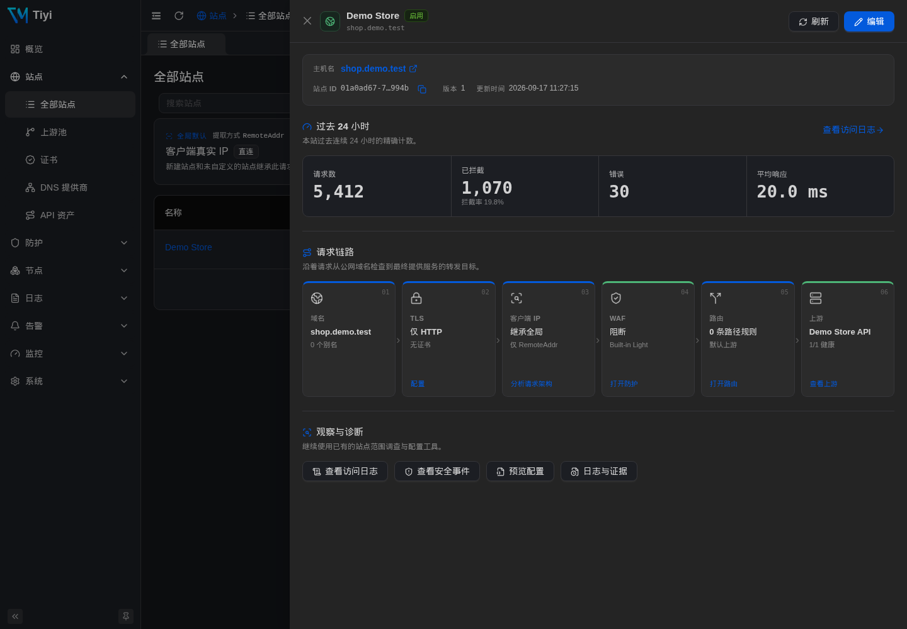
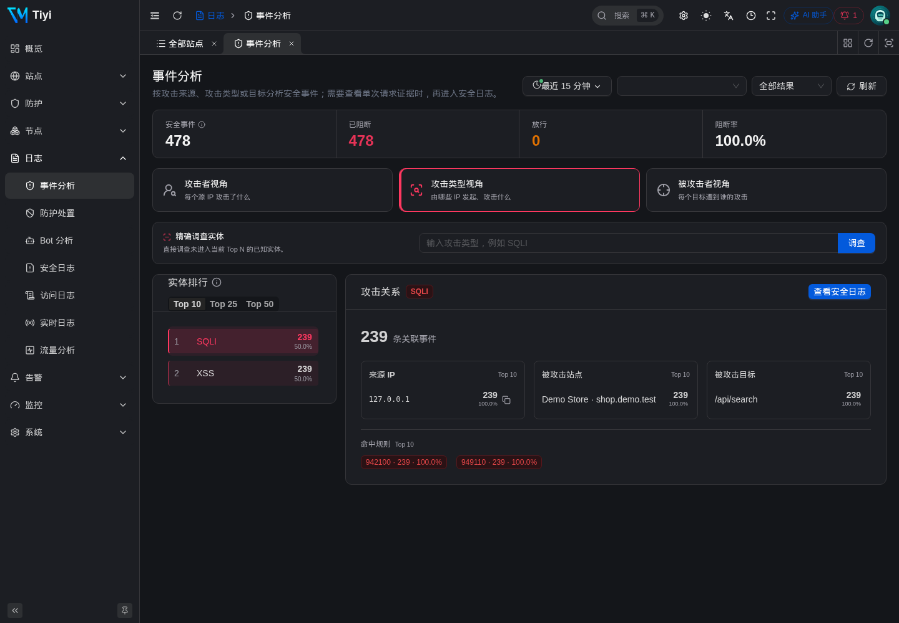
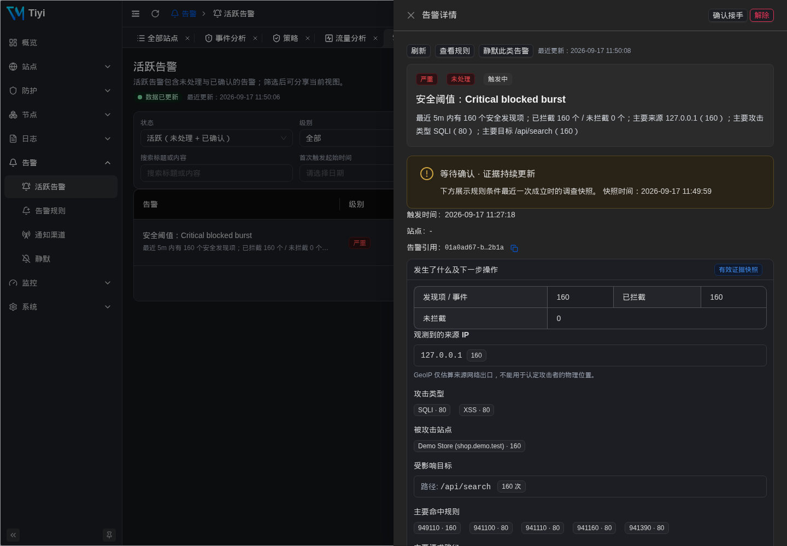
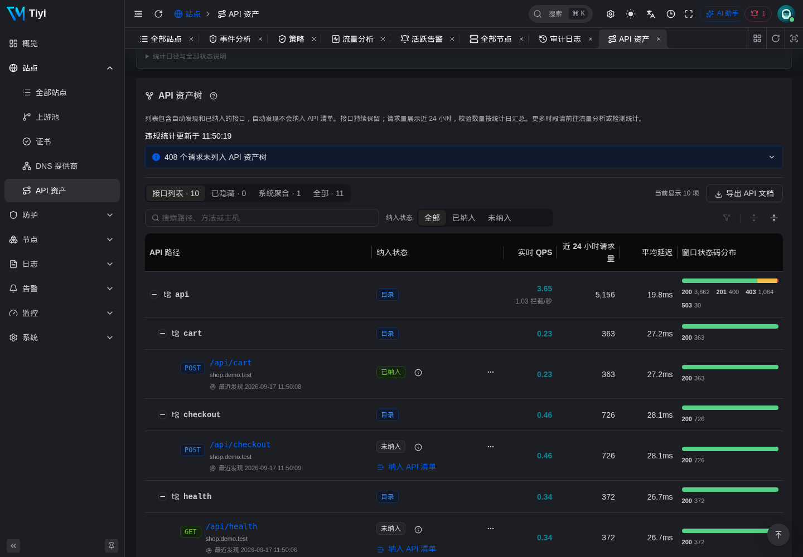
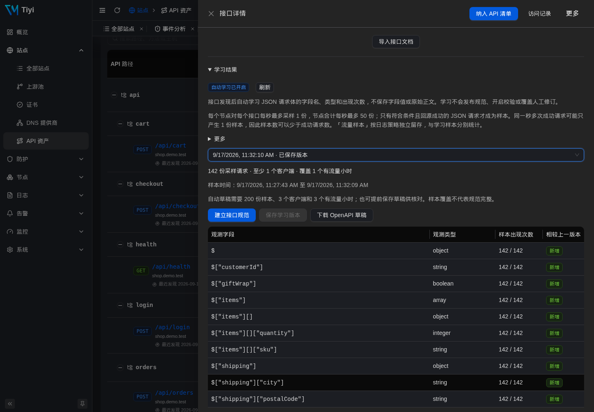
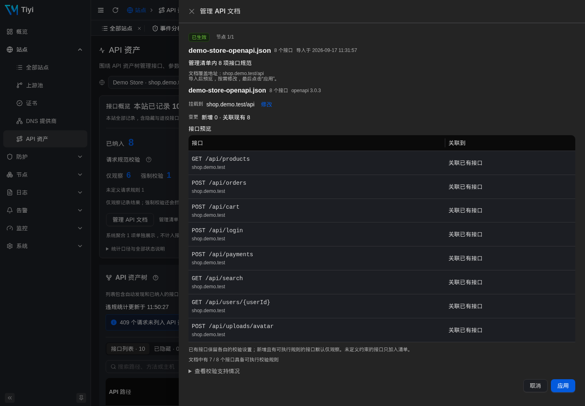
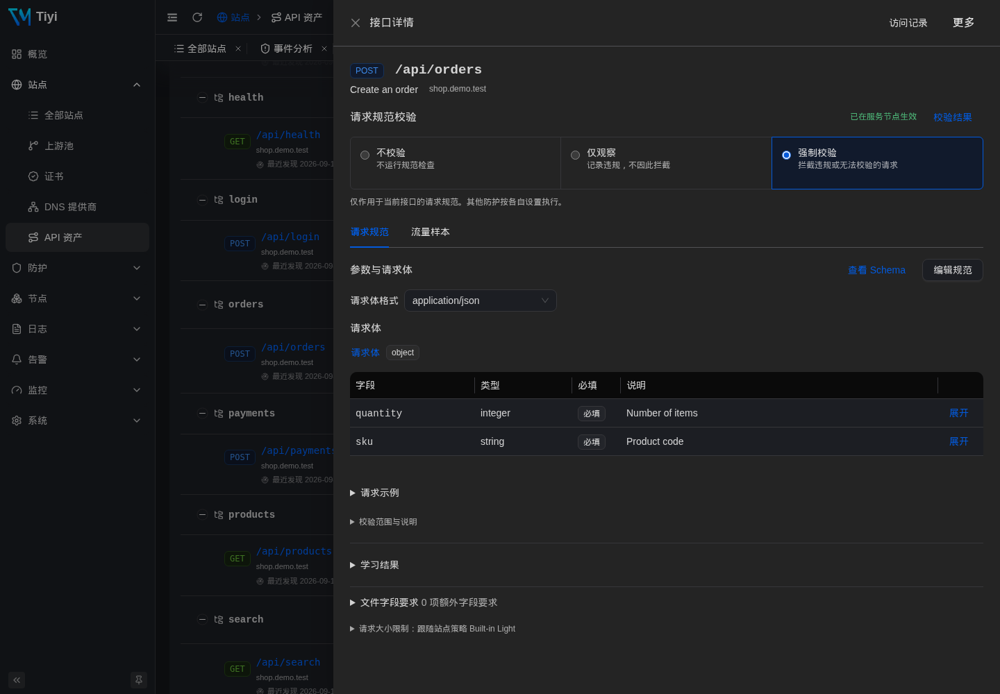
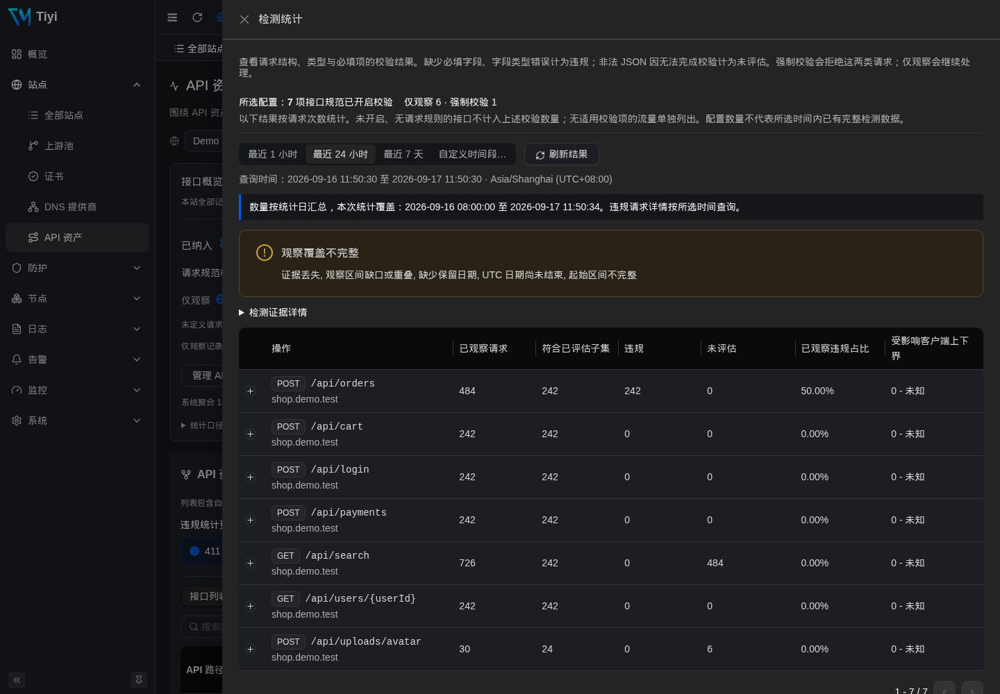
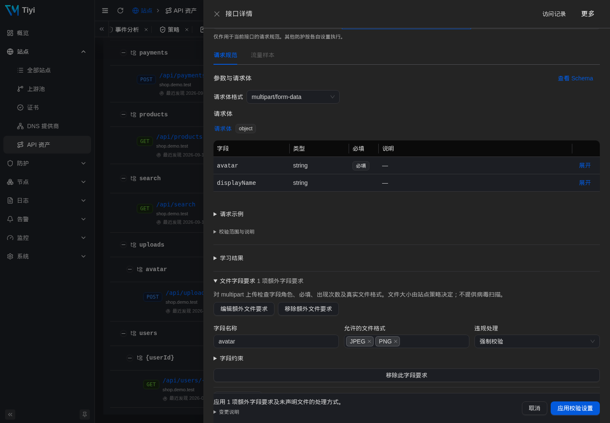

为你的网站和 API 部署防护。太一将 WAF、反向代理和可视化管理后台 集成在一个可执行文件中，帮助你接入网站、查看拦截原因并调整防护策略。 无需 Docker 或额外部署数据库。
在真实的太一管理后台中观看完整流程，或直接跳到任一步骤。 原版录屏保留了完整上手流程；当前界面及新增能力见下方产品演示与文档。
太一用一个 Go 进程取代了四服务的 docker-compose，并加入了运维真正需要的能力：实时配置投递、审计链、遥测，以及一个同时驱动 UI 与 CLI 的强类型 API。
八个稳定工作域分别是总览、应用交付、防护策略、节点、事件与日志、检测与响应、监控和系统管理。响应式导航、权限感知分组、服务端分页和一致的空状态/差异/应用反馈，让复杂工作流更易理解。
Coraza 把结构化策略编译成 SecLang；真实 IP/CIDR 列表和由 MMDB 支撑的 Country Access 在 WAF 之前由原生处理器执行。新站点默认使用 Light：攻击评分与资源护栏继续执行，常见 MIME/解析器兼容问题只观察而不中断。Standard 保留严格协议执行；站点覆盖、可视化规则、偏执等级、阈值与排除都无需 fork 规则集。
HTTP-01、DNS-01（Cloudflare 已生产可用，Route53/Aliyun 提供凭据校验桩）、通配符证书、企业上传证书，所有节点协调续期。
一个主机和证书可按路径分流到多个上游池，支持请求头变换、平滑加权轮询、主动健康检查与有界重试。可导出单个站点或全部站点，检查可移植 bundle 后，以显式冲突策略导入并在失败时回滚。
同一份 proto 同时驱动 Vben Admin UI、tiyi CLI 与节点流。每个写入路径只有一处；CLI 与 API 由编译期保证同步。
一个始终可写的 Controller 自带本机数据平面；节点 → 安装远端节点会分步引导下载二进制、签发 Token，并选择 systemd 或前台启动。Controller 不可用期间，Agent 继续按最后一次已接受的 bundle 代理流量。
仅 HTTPS 站点可要求静默浏览器工作量证明或私密 WebAuthn 确认。滚动窗口限速增加站点/全局临时封禁与独立挑战响应；provider IP 订阅以原子 last-good 快照发布，绝不会被隐式信任。
总览、执行分析与阈值告警使用日志采样前安全计数；事件分析保留采样关系调查，日志 → Bot 分析展示准入结果。覆盖缺口与 API 清单、WAF 压力、请求证据和受保护的本地 Prometheus 指标分别展示。
每一次变更 —— 包括 IP 列表绑定、限速端点、信任配置 —— 都会写入一行已签名的审计记录。台账显示运维者与资源名及可读摘要；每日锚点与 UI 内的校验链按钮让防篡改成为日常操作。显示时区遵循浏览器覆盖 → app.timezone → 浏览器 IANA，存储仍为 UTC。
新安装默认为安全事件保留有界请求头/请求体证据；控制台预览现在以 HTTP 请求行开头。运维人员可关闭，或把它附着到保留的攻击与访问日志。生产节点使用独立 SIEM 队列，通过 UDP、TCP 或 TLS 发送源生 Caddy/Coraza 或格式化事件，绝不进入请求路径。
可执行的节点/边/规则拓扑终结零散 XFF 解析。命名代理使用普通手动或订阅 IP 列表，每个 Header 选择已验证代理剥离或固定位置提取；失败关闭分析生成待审核草案，不会静默信任 provider feed。
OWASP CRS 4.25 已嵌入到二进制中；CRS 与排除包均支持离线归档导入；私钥与凭据使用 KEK 信封加密；ed25519 配置签名公钥在节点首次接入时固定。
规则去抖后进入持久化 pending → firing → resolved 生命周期，并明确记录结果、证据时间、观察时间、分组、静默与按事件定制的通知内容。运维可把保留 occurrence 安全重放到生产求值器，且不会发送通知。
被采样保留的拦截或可疑请求写入不可变、按天分区的 SecurityFact。运维可从 Attack Logs 按意图起草：拦截精确方法/路径、调优 CRS 误报，或确认高风险的仅跳过 CRS（自定义与 IP 控制仍生效）。全局 IP 操作保持独立。未经审核不会应用。
一个可选、默认关闭的 LLM 层，位于确定性 WAF 之侧 —— 绝不进入请求路径。解释任意事件或单条日志、把自然语言问题翻译成日志查询，并获得需你手动批准的策略调优或自定义规则草案。provider 无关（兼容 OpenAI、Azure、Ollama、vLLM）；每条提示都经脱敏、双重 RBAC 把关并限速。
Argon2id 本地账号、OIDC、SAML、LDAP 与 RADIUS 共用一个登录界面。TOTP 绑定和恢复、密码/会话控制、自定义角色与生成式失败关闭授权保护每一条 API、UI 与 CLI 路径。
tiyi apply -f site.yaml 应用已审核的资源清单，并为每个变更资源生成审计回执。应用前可用 --dry-run 和 tiyi diff 检查变更。同一个验证器、同一个写入器 —— 由架构保证。
发现应用实际提供的接口，把观测流量与已审核清单一起查看，检查请求量与响应状态。清单纳入和请求校验独立管理，先看清接口，再决定如何防护。
导入 OpenAPI 或 Swagger 并审核地址映射，也可从受支持的请求学习 JSON 字段名称与类型。审核并导出 OpenAPI 草稿，再为每个接口选择不校验、仅观察或强制校验；学习不会自动开启拦截。
站点策略统一管理正文和上传容量，接口按文件字段定义允许的格式。检查受支持的文件及容器结构，查看违规结果，并确认各服务节点的应用状态。文件检查不包含杀毒扫描。
下方每一张截图都来自实际运行的太一实例。同一份数据平面，同一份 UI，同一份 RPC。
站点运行概览把公网域名、TLS、WAF 策略、路径路由、上游健康和过去 24 小时精确计数串成一条请求链路。

不可变、按天分区的安全事实把攻击流组织成三个调查视角，不虚构会话，也不把分析逻辑放进请求路径。

事件抽屉把请求身份、Geo/ASN、CRS 命中、实际检测值与处置控件放在一起，同时保留底层日志流的上下文。

聚焦式调优工作区明确展示每一层防护，并在保存时把结构化策略编译为确定性的 SecLang。

流量分析展示实时 QPS 与精确排行；API 资产提供独立站点工作区，管理发现的接口、清单纳入状态、请求规范与校验。

在安全阈值规则中开启自动处置，太一把符合条件的来源 IP 加入全局封禁列表。有效期由你设置，处置回执与节点应用结果可核对，需要时可移除条目。

同一个二进制既可做 Controller 也可做 Agent。内置本机数据平面与每一台远端节点，在同一「节点」界面共享实时指标、配置修订号与安装指引。

站点、策略、信任配置、IP 列表与认证变更都会追加签名审计行。运维在产品内验证整条链，而不只是导出一份日志。



支持 OpenAPI 3.0、3.1、3.2 与 Swagger 2.0 的 JSON、YAML 文件。检查接口和地址映射，确认后应用。



沿防护链路查看请求在哪里被终止，再进入执行记录继续调查。业务流量与运行状态也在同一个概览中。

按接口设置允许的文件格式，上传容量由站点策略统一管理。头像上传和资料附件，可以使用不同的文件要求。

太一是商用闭源软件，上游保留 Apache-2.0。社区版、Pro 与企业版使用同一个二进制；签名授权只提高远程节点配额。控制平面运行在你自己的硬件上。
适合个人实验室、副项目，或想先了解太一的团队。
一个本机内置节点，包含完整产品能力。
适合在少量节点上跑生产的团队。
每个太一部署计费。年付可选。
适合受监管环境、气隙站点、全球边缘。
按机群规模与 SLA 量身定价。
有特定需求？support@tiyisec.com · 三个版本使用同一个二进制并包含完整 WAF 能力；区别在于授权规模、支持与供应链服务。
关于免费范围、已有网站接入和日常运维的常见问题。
太一是提供免费社区版的闭源软件，基于 Caddy、Coraza、OWASP CRS 等开源组件构建。公开仓库提供签名发行包、安装工具和文档，不包含太一应用源码。使用条款见服务条款及分发包中的 EULA。
可以。太一作为反向代理部署在 HTTP 源站前面，先用测试流量验证到现有应用的链路。如果 80、443 或 8080 端口已被占用，可先使用自定义端口。切换真实流量前，按部署指南核对域名路由、证书，并准备恢复原有访问路径的方法。
一台 Linux amd64 或 arm64 主机；默认服务安装使用 sudo 和 systemd。按照快速开始可以用本机演示后端验证，无需修改 DNS。CPU、内存和磁盘需求取决于流量、规则及日志保留量，上线前应使用自己的业务请求测试。也支持离线安装。
用请求 ID 查找对应攻击日志，在已保留明细时查看命中规则和请求证据。优先针对受影响的站点、路径和规则设置小范围例外，再验证正常访问与攻击拦截。具体步骤见WAF 调优指南。
先准备完整备份并核对目标版本的兼容性说明。兼容版本可以进行签名更新；状态不兼容时可能需要重建配置。迁移主机还需要匹配的版本以及完整状态和配置。更改已有安装前，请按升级与迁移指南操作。
六类终止场景共用 HTML、JSON、text 与 XML 模板。向访客提供可理解的消息及请求 ID，切换设置分组时保留未保存草稿。
会话暂时失败、DNS 续期及节点应用可按明确结果重试；有界诊断和健康探测避免慢消费者拖住正常请求处理。
日期是目标，不是承诺。条目随验证而推进，而非随乐观而推进。
{kind=link}